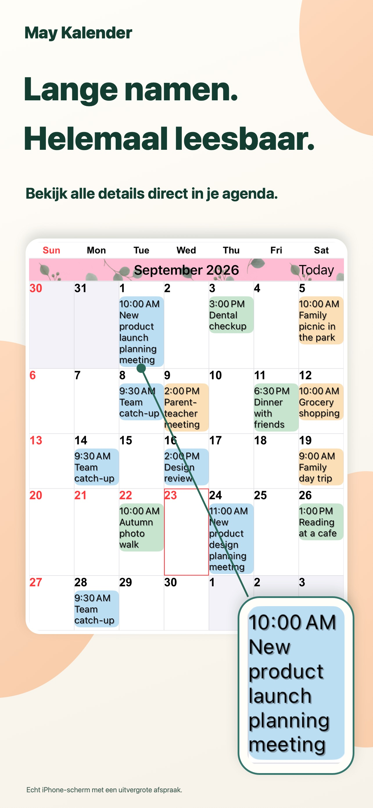
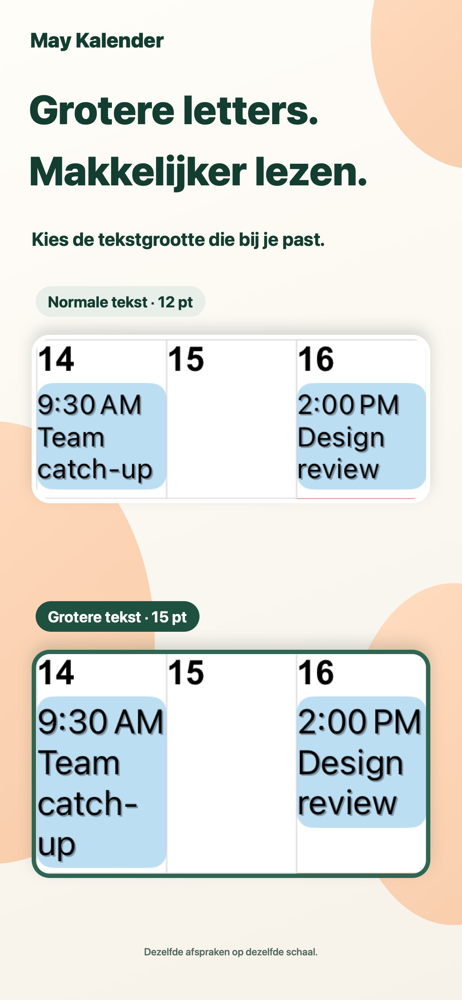
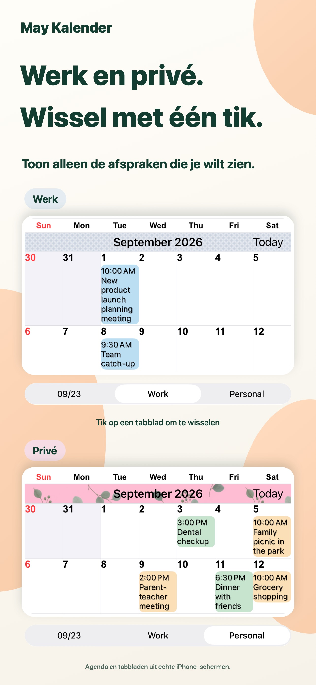
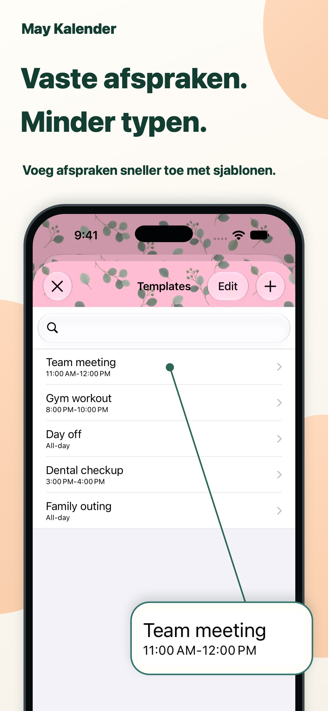

Een uitstraling die bij je past.
Combineer themakleuren, afspraakachtergronden en patronen voor jouw kalender.
Elke dag meer overzicht.
Lange titels direct in de maandweergave. Tekst en kleuren naar jouw smaak, zodat je afspraken in één oogopslag ziet.
Voor iPhone en iPadBekijk in de App StoreGratis download · In-app aankopen

Je dag plannen wordt wat gemakkelijker.
Werk en privé, bij elkaar op één plek.VOOR ELKE DAG
Pas de kalender aan jouw manier van plannen aan.
Lange titels lopen door op meerdere regels. Pas lettertype en tekstgrootte aan om details te lezen en het maandoverzicht te behouden.

Bewaar combinaties van agenda’s en wissel met één tik tussen werk en privé.

Bewaar vergaderingen, trainingen en afspraken als sjablonen. Tik twee keer op een datum en kies een sjabloon om een afspraak toe te voegen.

KLEINE DETAILS, GROOT VERSCHIL.
Combineer themakleuren, afspraakachtergronden en patronen voor jouw kalender.
Kies uit 20 soorten widgets, waaronder exclusieve widgets voor iPad.
Toon alleen afspraken die overeenkomen met de tekst die je invoert.
VRAGEN EN ANTWOORDEN
Downloaden is gratis. De app biedt in-app aankopen. Bekijk actuele prijzen en aankoopopties in de App Store. Bekijk in de App Store
Ja, op iPhone en iPad. Sommige widgets zijn exclusief voor iPad. Bekijk de actuele systeemvereisten in de App Store.
De app ondersteunt herinneringen, feestdagen, weeknummers en maankalenderinformatie. Ook de eerste weekdag en tijdzone zijn instelbaar.
Meldingen worden verstuurd door Apples Agenda-app. Je kunt waarschuwingen instellen vóór het begin of einde van een afspraak.
MEER OVERZICHT.
Begin met een kalender die bij je past.